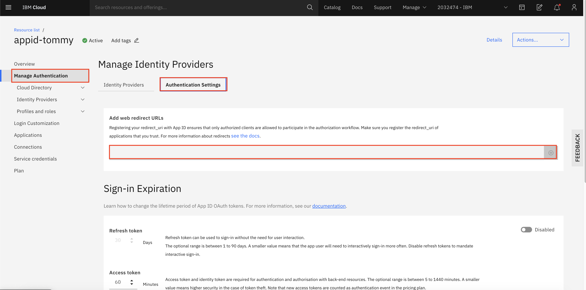

Install Kubeflow on IKS
This guide describes how to use the kustomize + kubectl to deploy Kubeflow on IBM Cloud Kubernetes Service (IKS).
Prerequisites
-
Authenticate with IBM Cloud
Log into IBM Cloud using the IBM Cloud Command Line Interface (CLI) as follows:
ibmcloud loginOr, if you have federated credentials, run the following command:
ibmcloud login --sso -
Create and access a Kubernetes cluster on IKS
To deploy Kubeflow on IBM Cloud, you need a cluster running on IKS. If you don’t have a cluster running, follow the Create an IBM Cloud cluster guide.
Run the following command to switch the Kubernetes context and access the cluster:
ibmcloud ks cluster config --cluster <cluster_name>Replace
<cluster_name>with your cluster name. -
kustomize (version 5.0.0) (download link)
Storage setup for a Classic IBM Cloud Kubernetes cluster
Note: This section is only required when the worker nodes provider WORKER_NODE_PROVIDER is set to classic. For other infrastructures, IBM Cloud Storage with Group ID support is already set up as the cluster’s default storage class.
When you use the classic worker node provider of an IBM Cloud Kubernetes cluster, it uses the regular IBM Cloud File Storage based on NFS as the default storage class. File Storage is designed to run RWX (read-write multiple nodes) workloads with proper security built around it. Therefore, File Storage does not allow fsGroup securityContext unless it’s configured with Group ID, which is needed for the OIDC authentication service and Kubeflow Jupyter server.
Therefore, you’re recommended to set up the default storage class with Group ID support so that you can get the best experience from Kubeflow.
-
Set the File Storage with Group ID support as the default storage class.
NEW_STORAGE_CLASS=ibmc-file-gold-gid OLD_STORAGE_CLASS=$(kubectl get sc -o jsonpath='{.items[?(@.metadata.annotations.storageclass\.kubernetes\.io\/is-default-class=="true")].metadata.name}') kubectl patch storageclass ${NEW_STORAGE_CLASS} -p '{"metadata": {"annotations":{"storageclass.kubernetes.io/is-default-class":"true"}}}' # List all the (default) storage classes kubectl get storageclass | grep "(default)"Example output:
ibmc-file-gold-gid (default) ibm.io/ibmc-file Delete Immediate false 14h -
Make sure
ibmc-file-gold-gidis the only(default)storage class. If there are two or more rows in the above output, unset the previous(default)storage classes with the command below:kubectl patch storageclass ${OLD_STORAGE_CLASS} -p '{"metadata": {"annotations":{"storageclass.kubernetes.io/is-default-class":"false"}}}'
Storage setup for vpc-gen2 IBM Cloud Kubernetes cluster
Note: To deploy Kubeflow, you don’t need to change the storage setup for vpc-gen2 Kubernetes cluster.
Currently, there is no option available for setting up RWX (read-write multiple nodes) type of storages.
RWX is not a mandatory requirement to run Kubeflow and most pipelines.
It is required by certain sample jobs/pipelines where multiple pods write results to a common storage.
A job or a pipeline can also write to a common object storage like minio, so the absence of this feature is
not a blocker for working with Kubeflow.
Examples of jobs/pipelines that will not work, are:
Distributed training with Kubeflow TFJob
If you are on vpc-gen2 and still need RWX, you may try portworx enterprise product.
To set it up on IBM Cloud use the portworx install with IBM Cloud guide.
Installation
Choose either single user or multi-tenant section based on your usage.
If you’re experiencing issues during the installation because of conflicts on your Kubeflow deployment, you can uninstall Kubeflow and install it again.
Single user
Using kustomize together with kubectl to deploy kubeflow:
-
Clone the manifest repo as follows:
git clone https://github.com/IBM/manifests.git -b v1.7-branch ibm-manifests-17 -
Change directory to
ibm-manifests-17:cd ibm-manifests-17 -
Generate password for default user:
user@example.compython3 -c 'from passlib.hash import bcrypt; import getpass; print(bcrypt.using(rounds=12, ident="2y").hash(getpass.getpass()))'Type your password and press
<Enter>after you seePassword:prompt. Copy the hash code for next step. -
Edit
dist/stacks/ibm/application/dex-auth/custom-env.yamland fill the relevant field with the hash code from previous step:staticPasswords: - email: user@example.com hash: <enter the generated hash here>You can also change the email value if needed.
-
Apply the
kustomizefile underiks-singlefolder for single user deployment:while ! kustomize build iks-single 2>/dev/null | awk '!/well-defined/' | kubectl apply -f -; do echo "Retrying to apply resources"; sleep 10; done
Accessing your cluster
The Kubeflow endpoint is exposed with NodePort 30380. To get a static ip, you can expose the Kubeflow endpoint as a LoadBalancer and access the EXTERNAL_IP.
For single-user Kubeflow, IBM Cloud uses Dex authentication by default. You can access the cluster using the email and password you specified in step 3 and 4 of Single User
Multi-user, auth-enabled
Run the following steps to deploy Kubeflow with IBM Cloud AppID as an authentication provider.
The scenario is a Kubeflow cluster admin configures Kubeflow as a web application in AppID and manages user authentication with builtin identity providers (Cloud Directory, SAML, social log-in with Google or Facebook etc.) or custom providers.
Prerequisites
For authentication, IBM Cloud uses AppID
-
Follow the Creating an App ID service instance on IBM Cloud guide to learn about Kubeflow authentication. You can also learn how to use App ID with different authentication methods.
-
Follow the Registering your app section of the App ID guide to create an application with type regularwebapp under the provisioned AppID instance. Make sure the scope contains email. Then retrieve the following configuration parameters from your AppID:
clientIdsecretoAuthServerUrl
You will be using these information in the subsequent sections.
-
Register the Kubeflow OIDC redirect page. The Kubeflow
REDIRECT_URLURL is[http|https]://<kubeflow-FQDN>/authservice/oidc/callback, depends on if you enable the HTTPS or not.<kubeflow-FQDN>is the endpoint for accessing Kubeflow. By default, the<kubeflow-FQDN>on IBM Cloud is<worker_node_external_ip>:30380. To get a static ip, you can expose the Kubeflow endpoint as a LoadBalancer and use the EXTERNAL_IP for your<kubeflow-FQDN>. Or useibmcloud ks nlb-dnscommand to map the EXTERNAL_IP to the generated FQDN for your cluster. In this case, you use the generated FQDN askubeflow-FQDN. If you enable HTTPS, you shall use generated FQDN. -
Then, you need to place the Kubeflow OIDC
REDIRECT_URLunder Manage Authentication > Authentication settings > Add web redirect URLs.Example:
https://my-kubeflow-442dbba0442be6c8c50f31ed96b00601-0000.sjc04.containers.appdomain.cloud/authservice/oidc/callback
Deploy: Using kustomize together with kubectl
-
Clone the manifest repo as follows:
git clone https://github.com/IBM/manifests.git -b v1.7-branch ibm-manifests-17 -
Change directory to
ibm-manifests-17:cd ibm-manifests-17 -
Update the
dist/stacks/ibm/application/oidc-authservice-appid/params.envwith values collected in Prereq section. You will need the following values:<oAuthServerUrl>- replace<APP_ID_oauthServerUrl><kubeflow-FQDN>- fill in the FQDN of Kubeflow, if you don’t know yet, just give a dummy one likelocalhost. Then change it after you got one. Or get default FQDN of your cluster by this command:ibmcloud ks nlb-dns ls -c <cluster name>(replace<cluter name>with your cluster name)
Example:
OIDC_PROVIDER=https://us-south.appid.cloud.ibm.com/oauth/v4/f341ff8b-a088-497a-same-5da4628df7fd REDIRECT_URL=https://my-kubeflow-442dbba0442be6c8c50f31ed96b00601-0000.sjc04.containers.appdomain.cloud/authservice/oidc/callback OIDC_AUTH_URL=https://us-south.appid.cloud.ibm.com/oauth/v4/f341ff8b-a088-497a-same-5da4628df7fd/authorization -
Update the
dist/stacks/ibm/application/oidc-authservice-appid/secret_params.envwith values collected in Prereq section. You will need the following values:<clientId>- replace the<APP_ID_clientId><secret>- replace the<APP_ID_secret>
Example:
CLIENT_SECRET=NjNhZDA3ODAtM2I3MCSECRETLTkwN2QtNDdhYmU5ZGIyMTBl CLIENT_ID=52b3e496-8888-8888-ABC9-c0da309cdf52 -
You can apply the
kustomizefile iniks-multifolder:while ! kustomize build iks-multi 2>/dev/null | awk '!/well-defined/' | kubectl apply -f -; do echo "Retrying to apply resources"; sleep 10; done -
If at any point the values change and you have to change them, you can either patch the configmap and secret or change the content in the files and apply the kustomize again. You will need to restart authservice with
kubectl delete pod -l app=authservice -n istio-system.To apply just the
oidc-authservice-appidyou can use this command:kustomize build dist/stacks/ibm/application/oidc-authservice-appid | kubectl apply -f - kubectl delete pod -l app=authservice -n istio-system
Verify mutli-user installation
Check the pod authservice-0 is in running state in namespace istio-system:
kubectl get pod -l app=authservice -n istio-system
Extra network setup requirement for vpc-gen2 clusters only
Note: These steps are not required for classic clusters, i.e. where WORKER_NODE_PROVIDER is set to classic.
A vpc-gen2 cluster does not assign a public IP address to the Kubernetes master node by default.
It provides access via a Load Balancer, which is configured to allow only a set of ports over public internet.
Access the cluster’s resources in a vpc-gen2 cluster, using one of the following options,
-
Load Balancer method: To configure via a Load Balancer, go to Expose the Kubeflow endpoint as a LoadBalancer. This method is recommended when you have Kubeflow deployed with Multi-user, auth-enabled support — otherwise it will expose cluster resources to the public.
-
Socks proxy method: If you need access to nodes or NodePort in the
vpc-gen2cluster, this can be achieved by starting another instance in the samevpc-gen2cluster and assigning it a public IP (i.e. the floating IP). Next, use SSH to log into the instance or create an SSH socks proxy, such asssh -D9999 root@new-instance-public-ip.
Then, configure the socks proxy at localhost:9999 and access cluster services.
kubectl port-forwardmethod: To access Kubeflow dashboard, runkubectl -n istio-system port-forward service/istio-ingressgateway 7080:http2. Then in a browser, go tohttp://127.0.0.1:7080/
Important notice: Exposing cluster/compute resources publicly without setting up a proper user authentication mechanism
is very insecure and can have very serious consequences(even legal). If there is no need to expose cluster services publicly,
Socks proxy method or kubectl port-forward method are recommended.
Next steps: secure the Kubeflow dashboard with HTTPS
Prerequisites
For both classic and vpc-gen2 cluster providers, make sure you have Multi-user, auth-enabled Kubeflow set up.
Setup
Follow the steps in Exposing the Kubeflow dashboard with DNS and TLS termination. Then, you will have the required DNS name as Kubeflow FQDN to enable the OIDC flow for AppID:
-
Follow the step Adding redirect URIs to fill a URL for AppID to redirect to Kubeflow. The URL should look like
https://<kubeflow-FQDN>/authservice/oidc/callback. -
Update the secret
appid-application-configurationwith the updated Kubeflow FQDN to replace<kubeflow-FQDN>in below command:export REDIRECT_URL=https://<kubeflow-FQDN>/authservice/oidc/callback export PATCH=$(printf '{"data": {"REDIRECT_URL": "%s"}}' "$REDIRECT_URL") kubectl patch configmap/oidc-authservice-parameters -n istio-system -p="$PATCH" -
Restart the pod
authservice-0:kubectl delete pod -l app=authservice -n istio-system
Then, visit https://<kubeflow-FQDN>/. The page should redirect you to AppID for authentication.
Troubleshooting
Expose the Kubeflow endpoint as a LoadBalancer
By default, the Kubeflow deployment on IBM Cloud only exposes the endpoint as NodePort 30380. If you want to expose the endpoint as a LoadBalancer, run:
kubectl patch svc istio-ingressgateway -n istio-system -p '{"spec": {"type": "LoadBalancer"}}'
Then, you can locate the LoadBalancer in the EXTERNAL_IP column when you run the following command:
kubectl get svc istio-ingressgateway -n istio-system
There is a small delay, usually ~5 mins, for above commands to take effect.
Authservice pod taking too long to restart
You might see the authservice-0 pod taking some time to restart. If that happens you can delete to pod which will kick off restart from kubernetes reconciler.
kubectl delete pod -l app=authservice -n istio-system